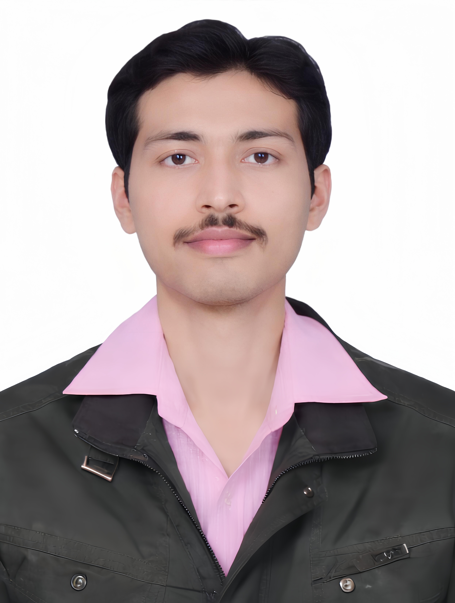
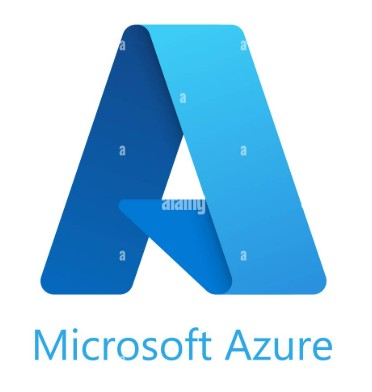
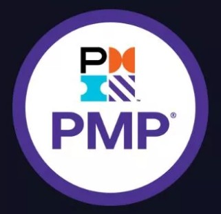
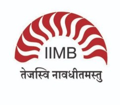
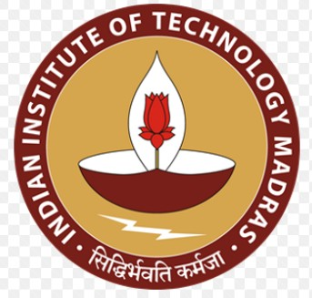
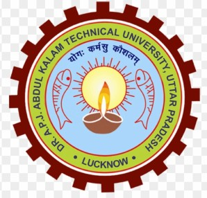

Anadi Mayank Kasaundhan
Lead Specialty Software Engineer · Modernization Lead · Cloud & AI Architect
GCP · Kubernetes · OpenShift · GPU Platforms · MLOps
- mayankanadi@gmail.com
- +91 8099066820
- Hyderabad, India
- linkedin.com/in/anadi-kasaundhan-22979716
Professional Summary
- Principal-level engineering leader, 18+ years leading enterprise cloud transformation, AI/ML platform engineering, and large-scale modernization in banking and regulated environments — VP at Wells Fargo, Hyderabad, driving mission-critical platforms across enterprise risk domains.
- Expert in GCP, Kubernetes/OpenShift, GPU computing, and MLOps; architect of PB-scale data platforms and distributed AI systems supporting enterprise risk and regulatory workloads across multi-region, zero-trust cloud infrastructure.
- Proven record of improving platform reliability 35%, reducing operational overhead 50%, and accelerating infrastructure provisioning 60% through automation-first, zero-trust architectures and Terraform Enterprise IaC with full governance.
- Led global cross-functional engineering teams of 20+ engineers delivering GPU clusters, LLM platforms, Big Data ecosystems, and regulatory compliance platforms — boosting GPU utilization ~55% and cutting model training time ~30%.
- Patent holder (GPU Hard Kill Switch) · Wells Fargo Top Achievers Award 2025 · 6 accolades · GCP, Azure Solutions Architect, PMP & Terraform certified.
Work Experience
Wells Fargo — Hyderabad, India · 2013 — Present
Modernization Lead — GCP Cloud Adoption & Big Data Ecosystem
Wells Fargo
- Architect multi-region, zero-trust GCP cloud platform for enterprise risk analytics, processing PB-scale data workloads via Vertex AI, Dataproc, GCS, Cloud Composer, KMS, and Secret Manager.
- Lead enterprise cloud modernization and migration strategy for critical banking platforms, designing GCP landing zones aligned with regulatory compliance and zero-trust security architectures.
- Implement Terraform Enterprise IaC with Sentinel policy-as-code, GitOps pipelines (GitHub Actions, Cloud Build), and reusable modules — reducing infrastructure provisioning time by 60% with full governance.
- Architect VSCode-native custom AI agents and MCP servers integrating enterprise Confluence and Terraform repositories — enabling intelligent code generation, runbook retrieval, and plan validation natively in the IDE, significantly boosting engineering team delivery velocity.
- Establish enterprise MLOps platform via Vertex AI Pipelines (Kubeflow) enabling automated ML lifecycle, model registry, scalable inference, and end-to-end reproducible ML workflows.
- Lead global cross-functional engineering teams of 20+ engineers across Architecture, Security, Data Engineering, and Risk — managing sprint planning, architecture reviews, and executive reporting.
Modernization Lead — Enterprise Risk Technology
Wells Fargo
- Built Kubernetes/OpenShift-based AI platform integrating GPU clusters and NVIDIA RunAI for distributed training workloads — boosting GPU utilization by 55% and reducing model training time by 30% for large-scale ML systems.
- Led cloud and on-prem modernization of critical risk platforms to OpenShift and GCP; enhanced platform reliability by 35% and reduced operational overhead by 50% using SRE practices and automation-first engineering.
- Enforced enterprise-grade RBAC, IAM, network policies, VPC Service Controls, and observability pipelines — establishing zero-trust security posture across all platform environments.
Platform Lead — CalcServices Regulatory Platform
Wells Fargo
- Directed CCAR/CECL regulatory model execution platform ensuring mission-critical stability, compliance, and zero-downtime delivery for enterprise risk reporting.
- Accelerated release velocity by 25% and reduced defect leakage by 40% via DevOps transformation, automated testing pipelines, and engineering process improvements.
- Led BCP readiness, vulnerability remediation, and SRE adoption; Python-based automation improved team productivity 30%; mentored cross-shore engineers across India and the US.
QA Automation Lead
Wells Fargo
- Built reusable automation frameworks across enterprise portfolios, cutting regression cycle time by 60% and eliminating manual testing bottlenecks.
- Oversaw testing strategy, quality governance, and delivery standards for large-scale platform programmes.
Additional Work Experience
Software Engineer
Oracle
Automated Oracle Insurance Policy Administration; improved regression coverage 5%.
Sr QA Engineer
Thomson Reuters
Designed automation frameworks for Tax & Accounting applications.
Software Engineer
Birlasoft
Automated Siebel pricing, orders, and quote workflows; reduced cycle time 30%.
Select Projects
GCP Cloud Adoption & Big Data Ecosystem
Architected GCP ecosystem (Vertex AI, Dataproc, Composer, GCS, KMS, Secret Manager) via Terraform Enterprise and GitOps; built VSCode MCP servers for Confluence/Terraform automation; achieved ~40% faster provisioning.
Enterprise GenAI Platform — OpenShift
Full-stack on-prem OpenShift / NVIDIA RunAI platform for LLM training and inference; ~55% GPU gain, ~30% less model training time, ~60% less ops overhead — delivered from scratch with zero prior GPU exposure.
Enterprise Big Data Platform — OpenShift
Integrated Spark, Airflow, JupyterHub, YuniKorn, NetApp S3 on on-prem OpenShift; automated cluster ops reducing manual tasks ~50–60%; produced enterprise runbooks for adoption at scale.
Core Competencies
- Cloud Transformation
- GCP Migration · Landing Zones · Enterprise Adoption · Legacy Modernization · Multi-region Architecture
- Kubernetes Platforms
- OpenShift · Kubernetes · Multi-cluster Architecture · Container Platforms · Helm · RBAC
- GPU & HPC Platforms
- NVIDIA RunAI · GPU Clusters · Distributed Training · High Performance Computing (HPC) · GPU Scheduling
- AI/ML & MLOps
- Vertex AI · Kubeflow · ML Pipelines · Model Serving · RAG · LLM Platforms · MLflow · Feature Stores
- Big Data Engineering
- Dataproc · Apache Spark · Data Lakes · Airflow · Cloud Composer · PB-scale Processing · YuniKorn
- Infrastructure as Code
- Terraform Enterprise · GitOps · CI/CD Automation · Sentinel Policy-as-Code · Ansible · GitHub Actions
- Security & Compliance
- IAM · KMS · VPC Service Controls · Zero Trust Architecture · CMEK · RBAC · Network Policies
- Programming & Automation
- Python · Bash · Automation Frameworks · VSCode Native AI Agents · MCP Servers · Confluence Integration
Certifications
-
Google Cloud Platform (GCP)
Professional Cloud Architect · ML Engineer · Data Engineer · DevOps Engineer
-

Microsoft Azure
Solutions Architect Expert · DevOps Engineer Expert
-

Project Management Institute (PMI)
Project Management Professional (PMP)
Education
-

Generative AI & Large Language Models — Silver Medal
IIM Bangalore
-

Machine Learning with TensorFlow — Silver Medal
IIT Madras
-

B.Tech Electronics & Communication (Honors), 80%
UPTU, Lucknow
Patent
GPU Hard Kill Switch
Inventor · Filed
Filed patent for a novel deterministic, hardware-level emergency shutdown for GPU compute nodes in enterprise AI/HPC clusters. Enables immediate power interruption to runaway or compromised GPU workloads without software-layer dependency — ensuring platform integrity, data security, and regulatory compliance.
Accolades
- 2025
- Wells Fargo Top Achievers Award
- 2023
- Leadership & Partnership Award — Level 3
- 2021
- Leadership & Partnership Award — Level 1
- 2018
- Champion Award
- 2016
- Best Project Practice Award
- 2014
- Gold Coin Award
Interests
Reading · Technology Trends · Socializing · Cricket · Music · Personal Productivity